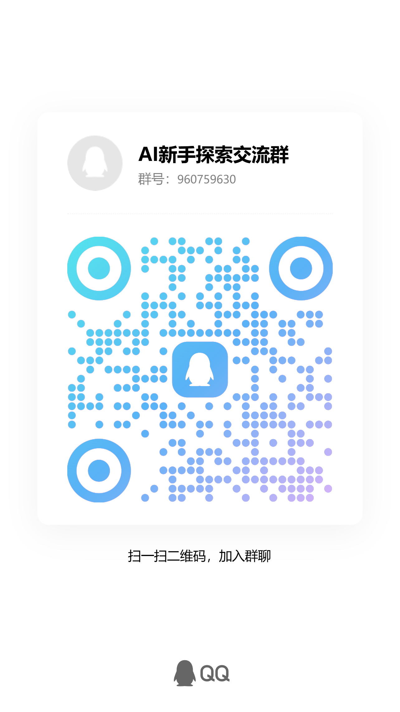

给零基础看的 AI 自学教程
从第一课开始，把 AI 真正用起来
每节课都按“先读主讲义、再填工作纸、最后产出一个小成果”来设计。你可以不懂术语，但要能跟着页面完成任务。
新手只按这 5 步学
不要把教程当资料库翻。每一节都要带着一个小任务读完。
课程地图
先从第 1 课开始，按“理解 -> 提问 -> 验证 -> 工作流 -> 落地”的顺序走，不需要先把名词背完。
新手入门
这一段是给零基础准备的。每一课都能单独打开，也能按顺序一路跟做到底。
入门-1
第一章：先建立正确认知
先把概念边界理清，避免一上来被术语和产品名带偏。
本章总产物
完成一张自己的 AI 能力分类表：至少列出 6 个真实场景，并标注它们属于识别、预测、推荐、生成、执行还是连接。
入门-2
第二章：先学会用再学原理
围绕提问、提示词和验证，建立新手最先需要的使用能力。
本章总产物
沉淀一套自己的提问模板和验证清单：能把模糊需求改成高质量提示，并能检查 AI 输出是否可用。
入门-3
第三章：把 AI 用进日常工作
从办公、内容、图像、知识检索切入，先形成可见的使用成果。
本章总产物
做出一个可复用的日常任务模板，用于会议纪要、文案草稿、图片提示词或知识库问答。
入门-4
第四章：从工具使用到工作流
从单次问答升级到可重复、可执行、可验证的业务流程。
本章总产物
画出一条带输入、工具、输出、人工验收和失败处理的 AI 工作流。
入门-5
第五章：电商场景落地
把模型、Agent、MCP、Skill 组合起来，形成电商 AI 系统视角。
本章总产物
完成一张电商 AI 落地路线图：从内容生产、获客私域、客服复购到系统全景，标出先做什么、后做什么。
入门-6
第六章：游戏场景落地
把 AI 放进真实游戏开发链路：从行业判断、引擎原型、Agent 写代码、美术资产生成，到 MCP 连接 Unreal、Unity 和 Figma。
本章总产物
设计一个 AI 辅助游戏开发小样方案：包含玩法目标、引擎任务、代码 Agent 分工、美术资产规范、MCP 工具连接和验收清单。
- 6-1入门 6-1：游戏行业为什么开始重视AI工作流理解 AI 在游戏开发里的真实位置：它不是替代完整团队，而是把原型、内容、测试和协作变成更短的迭代循环。
- 6-2入门 6-2：用Codex做游戏引擎原型学会把 Unreal、Unity 或 Godot 中的原型任务写成 Codex 能执行、能运行、能验收的小工单。
- 6-3入门 6-3：用Agent编写游戏玩法代码学会把玩法需求拆成状态、输入、事件、数据和测试，让 Agent 生成代码后仍能被人审查和迭代。
- 6-4入门 6-4：美术资产生成与游戏管线理解 AI 美术在游戏里更适合作为概念、占位、变体和沟通工具，正式上线前必须经过风格、版权、性能和格式管线检查。
- 6-5入门 6-5：MCP在游戏开发中的使用理解 MCP 如何把 AI Agent 接到 Unreal、Unity、Figma、文件系统和内部工具，让游戏开发从聊天建议变成可执行工作流。
老鸟进阶
当你已经知道 AI 基础和验证方法后，再看 Codex、Loop、网页制作、GitHub 发布和 Dify 自动化。
Codex能做什么
理解 Codex 不是普通聊天机器人，而是能进入项目现场读、改、跑、验收的 AI 工作助手。
这节课的任务
写一个给 Codex 的任务说明，包含目标、范围、验收标准和禁止事项。
Loop Engineering是什么
理解 Loop Engineering 是一种循环式工作方法：计划、执行、验收、修正，再进入下一轮。
这节课的任务
为“把一个旧网页改成手机友好教程站”设计 3 轮 Loop，每轮写清目标和验收证据。
如何用Codex制作好看的网页
学会把目标用户、页面结构、视觉规范和移动端验收交给 Codex，让网页既能看又能用。
这节课的任务
写一段网页制作需求，让 Codex 为“AI 新手课程”设计一个手机优先首页，并列出 5 条验收标准。
Git、GitHub与Codex协作
理解 Git 记录本地修改，GitHub 托管和发布代码，Codex 可以帮助提交、推送和验证线上结果。
这节课的任务
写出一次 GitHub Pages 发布流程：本地生成、检查、提交、推送、线上验证，每一步写出成功证据。
你真的会用Dify吗？
学会用 Codex 搭建 Dify 平台、完成 Docker 部署，并把 Wiki 发布、Bug 汇总和自动 Code Review 做成自动化流程。
这节课的任务
设计一个 Dify + Codex 自动化方案：先写 Docker 部署步骤，再画出 Wiki 发布、Bug 飞书文档、自动 Code Review 三条流程。
智能体怎么选，不要只看名字
课程还补充了一组常见智能体对比：Codex 更适合工程交付，OpenClaw 更像常驻个人助理，Hermes Agent 更强调长期记忆和自改进。相关说明已经放进资源脑图和第六章的 MCP 课里。
实战案例库
多案例学习区
后续案例会持续增加。这里按任务类型、阶段和最终产物组织，方便从“想学什么”直接进入对应真实任务线。
3
已整理案例
3
任务类型
交付物
页面、流程、工作纸、验证证据
工具迭代1内容生产1游戏开发1
案例 01
已上线
策略看板迭代
看 Codex 如何持续修改、验证、上线一个策略看板，并把高风险内容改成公开安全的工程案例。
案例 02
已上线
小说视频内容生产链
看小说脚本如何被拆成分镜、视频素材、成片交付和复盘清单，适合理解多步骤内容生产。
案例 03
课程化
游戏开发 MCP 工作流
看 Figma、Unity、Unreal 和文件系统如何通过 MCP 接入 Agent，把 UI 设计、引擎原型、截图验收和人工确认串成低风险流程。
新手怎么学
不是先把所有概念背完，而是每课做出一个小结果，边做边建立理解。
- 每节课先回答核心问题，再看概念定义。
- 每次只抓 3 个重点，不要求一次记住所有名词。
- 每课必须做一个小产物，别只停留在“看懂了”。
- 涉及钱、售后、法律、健康的输出，必须先验证。
学完能得到什么
学完不是“看过 25 节主讲义和 25 张工作纸”，而是手里会有一套能继续复用的方法框架。
- 一张 AI 能力地图：知道模型、工具、Agent 各自做什么。
- 一套提问模板：目标、上下文、约束、验收标准。
- 一套验证习惯：先分风险，再决定能否直接使用。
- 一条落地路线：从单次问答走向工作流和业务系统。
学习交流群
加入 AI 新手探索交流群
遇到课程问题、练习卡住、想看别人怎么把 AI 用到真实任务里，可以进群交流。群号：960759630。

配套资源
这里放学习时会用到的脑图和进阶入口，备课用的 PPT 结构不放在学生主线里。
{kind=link}